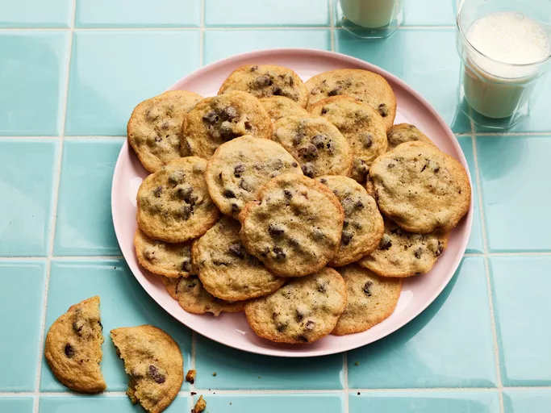

Chocolate Chip Cookies

Description
A tried and tested take on the classic dessert treat.
Ingredients
- 2 ¼ cups all-purpose flour
- 1 teaspoon baking soda
- 1 teaspoon salt
- 1 cup butter, softened
- ¾ cup white sugar
- ¾ cup packed brown sugar
- 1 teaspoon vanilla extract
- 2 large eggs
- 2 cups semisweet chocolate chips
- (OPTIONAL) 1 cup chopped nuts
NOTE: Yields 60 cookies
Steps
- Gather all ingredients and preheat the oven to 375 degrees F (190 degrees C)
- Combine flour, baking soda and salt in small bowl
- Beat butter, white sugar, brown sugar and vanilla in a large mixing bowl until creamy
- Add eggs, one at a time, beating well after each addition
- Gradually beat in flour mixture. Stir in chocolate morsels and nuts
- Scoop and drop dough by rounded tablespoon onto ungreased baking sheets
- Bake in the preheated oven until golden brown, 9 to 11 minutes, switching racks halfway through
- Cool on the baking sheets for 2 minutes, then transfer to wire racks to cool completely
- Serve and enjoy :)
Home